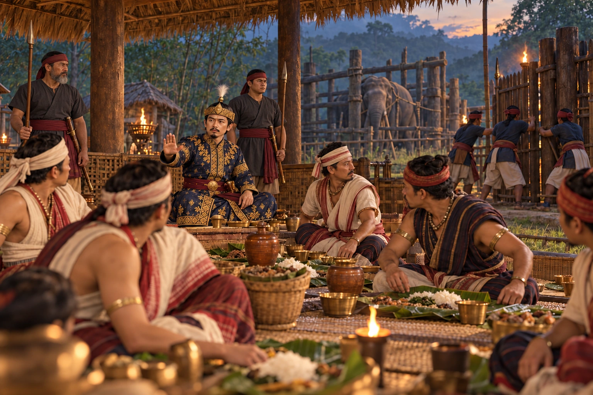

The Feast Trap for the Tipam Conspirators
c. 1398–1400 · The coming of Sukaphaa

Early in his reign the Tipam chiefs plot against the young king. Sudangphaa invites the conspirators to a feast and has them killed.
People: Sudangphaa (Bamuni Konwar)
Open this scene in the interactive archive · Follow this event on MAP